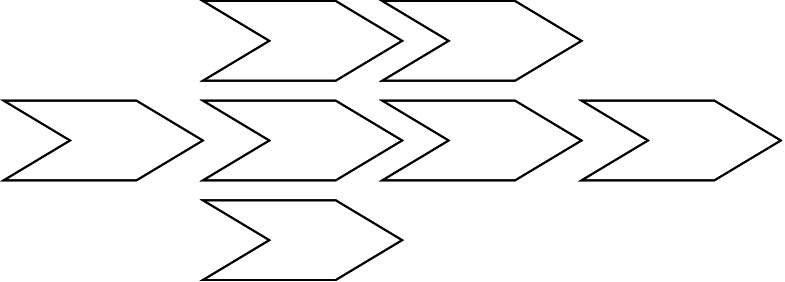

The two really basic patterns


Non-blocking I/O in a reactor
Reactor == a single-threaded while loop
that triggers callbacks on events
while reactor_running?
events.each do |event|
event.callbacks.each do |cb|
cb.call(event)
end
end
end
3 ways to handle incoming requests:
Examples will be in:
var net = require('net');
var server = net.createServer(function (socket) {
socket.pipe(socket);
});
server.listen(1337, "127.0.0.1");
require 'eventmachine'
class EchoServer < EM::Connection
def receive_data(data)
send_data(data)
end
end
EM.run do
EM.start_server("127.0.0.1", 1337, EchoServer)
end
int res;
res = listen(sock, backlog);
if (res < 0) {
perror("Listen error");
return -1;
}
begin
File.open('test.rb', 'w') do |f|
f.puts "Hello World!\n"
end
rescue Exception => msg
puts msg
end
Neither works :(
Because the function returns before the error can happen
errbackfs.readFile('/etc/passwd', function (err, data) {
if (err) throw err;
console.log(data);
});
http = EM::HttpRequest.new("http://google.fr/").get
http.errback do |error|
puts "Error #{error}"
end
http.callback do
puts "Yiped, Google is up!"
end
fs.open('results', 'w', function(err, fd) {
fs.write(fd, results, function(err, written, f) {
fs.close(fd, function(err) {
done();
});
});
});
var counter = 3;
fs.readFile("part.1", onRead);
fs.readFile("part.2", onRead);
fs.readFile("part.3", onRead);
function onRead(err, content) {
if (err) throw err;
if (--counter === 0) { done(); }
}
Lots of node.js libraries for these 2 patterns.
Flow().seq(function(next) {
console.log("first job");
fs.readFile(filename, next);
}).seq(function(next, err, data) {
console.log("second job. run *after* first job");
next();
});
Flow().par(function(next) {
console.log("job foo");
next(null, "foo");
}).par(function(next) {
console.log("job bar");
next(null, "bar");
}).seq(function(next, errs, results) {
console.log("job run *after* foo and bar");
});

EventMachine has EM::Iterator!
cmds = ['pwd', 'uptime', 'uname', 'date']
EM::Iterator.new(cmds).map(proc{ |cmd,iter|
EM.system(cmd) { |out,status| iter.return(out) }
}, proc{ |results|
p results
})
cmds = ['pwd', 'uptime', 'uname', 'date']
EM::Iterator.new(cmds, cmds.length).map(proc{ |cmd,iter|
EM.system(cmd) { |out,status| iter.return(out) }
}, proc{ |results|
p results
})
cmds = ['pwd', 'uptime', 'uname', 'date']
EM::Iterator.new(cmds, 2).map(proc{ |cmd,iter|
EM.system(cmd) { |out,status| iter.return(out) }
}, proc{ |results|
p results
})
pool = EM::Pool.new
4.times { pool.add EM::HttpRequest.new(url) }
many_paths.each do |path|
pool.perform do |conn|
req = conn.get(:path => '/', :keepalive => true)
req.callback { puts "Size: #{req.response.size}" }
end
end
They are different beast
But Node.js has also its cool features
var filestream = fs.createReadStream('file.txt'),
gzipstream = gzip.createStream(),
writestream = fs.createWriteStream('file.tgz');
filestream.pipe(gzipstream)
.pipe(writestream)
.on('end', function () { console.log("done"); });
http = EM::HttpRequest.new("http://google.fr/").get
http.errback do |error|
puts "Error #{error}"
end
http.callback do
puts "Yiped, Google is up!"
end
http.timeout(10, :timeout)
var http = require('http');
http.createServer(function (req, res) {
if (request.method === 'POST') {
// Accept the new message
} else {
// Wait for the next message
}
}).listen(1337, "127.0.0.1");
var chat = new EventEmitter();
http.createServer(function (req, res) {
if (request.method === 'POST') {
req.on('data', function(msg) {
chat.emit("message", msg); });
} else {
chat.on("message", function(msg) { res.end(msg); });
}
}).listen(1337, "127.0.0.1");
chan = EM::Channel.new
chan.subscribe {|msg| send_data(msg) }
chan << "A message"
fs.open('results', 'w', function(err, fd) {
fs.write(fd, results, function(err, written, f) {
fs.close(fd, function(err) {
done();
});
});
});
Extract function and give them a name
But, be warned, you will lose context!
In fact, harder to follow the flow

fib = Fiber.new do
x, y = 0, 1
loop do
Fiber.yield y
x, y = y, x+y
end
end
20.times { puts fib.resume }
def async_fetch(url)
f = Fiber.current
http = EM::HttpRequest.new(url).get :timeout => 10
http.callback { f.resume(http) }
http.errback { f.resume(http) }
return Fiber.yield
end
EM.run do
Fiber.new do
data = async_fetch('http://www.google.com/')
puts "Fetched page: #{data.response_header.status}"
EM.stop
end.resume
end

EventMachine.synchrony do
multi = EventMachine::Synchrony::Multi.new
multi.add :a, EM::HttpRequest.new(url1).aget
multi.add :b, EM::HttpRequest.new(url2).aget
res = multi.perform
p res
EM.stop
end
Each fiber has a stack of 4Kb
Don't use it with Rails for example

EM.run do
# many things...
on_a_callback do
compute_pi_decimals(1_000_000)
end
end
One thread, one process...
We are using only one core of our computer!